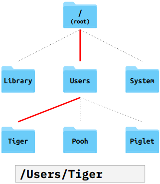
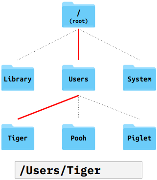
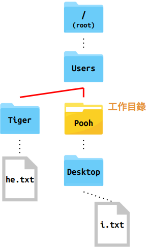

knitr::opts_chunk$set(
echo = TRUE,comment = '#>',message = F,
out.width = "80%")
library(knitr)
img <- function(...) {
items = unlist(list(...))
paths = items
for (i in seq_along(items)) {
if (startsWith(items[i], "http://") | startsWith(items[i], "https://")) paths[i] = items[i]
else
paths[i] = paste0("assets/img/", items[i])
}
knitr::include_graphics(paths)
}關於
程式設計與資料科學導論實習課講義
1 掌握你的電腦
1.1 路徑 & 工作目錄
電腦透過資料夾 (directory) 與檔案 (file) 將資訊組織起來，方便與使用者互動。資料夾裡面可以是另一個資料夾，也可以是檔案。換言之，資料夾是有階層結構的，可以一層層的包覆起來
在使用電腦時，我們通常是透過圖形使用者界面 (GUI) 與電腦互動。在操作檔案與資料夾時，我們通常會透過檔案管理員這類的程式 (Figure @ref(fig:foldergui))
(#fig:foldergui)Windows 與 Mac 的檔案管理界面1
對於初次接觸程式的同學，需要逐步習慣使用 Text-based user interfaces (TUI) (下圖)。透過 TUI 與電腦互動意謂著使用者(幾乎)只能使用鍵盤，也意謂著使用者需了解更多的程式指令以及電腦組織檔案與資料夾的方式。但與此同時，使用者將能更好地掌握自己的電腦2

1.1.1 目錄結構 (Directory structure)
為方便理解電腦裡面的資料夾與檔案結構 (簡稱目錄結構)，我們通常會以樹狀結構去表示目錄結構。Figure @ref(fig:dirstruct) 是 Windows 以及 Mac 上的目錄結構圖
在樹狀圖中，越上方的資料夾階層越高。最上方的資料夾稱為根目錄 (root)，電腦中的所有其它資料夾與檔案皆位於根目錄之內3
(#fig:dirstruct)目錄結構
- 以 Figure @ref(fig:dirstruct) 為例，
- Windows 的根目錄
C:裡有 3 個資料夾temp,Users, 以及Windows，其中的Users之下又有 3 個資料夾Tiger,Pooh與Piglet - Mac 的根目錄以
/表示，裡面有 3 個資料夾Library,Users以及System。Users之下有Tiger,Pooh與Piglet3 個資料夾
- Windows 的根目錄
1.1.2 路徑 (Path)
使用 Text-based user interfaces (TUI) 與電腦互動時，需要一套用來描述路徑 (Path) (亦即, 某個資料夾或檔案位於電腦上的哪個位置) 的語法。這套語法基本上就是在告訴電腦「如何從 A 資料夾『走到』目標資料夾 (或檔案)」
1.1.2.1 絕對路徑
絕對路徑就是在告訴電腦「如何從根目錄 (root)走到目標資料夾 (或檔案)」
/在描述路徑時具有 2 種語意：- 若
/出現在路徑的起始 (e.g.,/Users)，則其代表的是根目錄 (Windows 的C:以及 Mac 的/) - 若
/出現在 路徑的中間 (e.g.,C:/Users/Pooh)，則是作為母 (Parent) 子 (Child) 資料夾之間的分隔符號
- 若
- 舉例來說，
- 若要告訴電腦根目錄的位置，只須輸入根目錄的名稱：
C:(Windows)
/(Mac)
- 若要告訴電腦
Tiger的位置，則可以在根目錄後面依序輸入Users與Tiger，並使用/作為資料夾間的分隔線：C:/Users/Tiger(Windows)
/Users/Tiger(Mac)
- 若要告訴電腦根目錄的位置，只須輸入根目錄的名稱：
 

現在是時候打開終端機 (Terminal) 玩玩看了 (解鎖你電腦的 1 號隱藏功能)。
Windows
按下 Windows 鍵
⊞搜尋：cmd打開「命令提示字元」在跳出來的黑黑的視窗輸入
cd，此時應會印出一個絕對路徑4：C:\Users\{username}這個路徑包含 3 個資料夾
C:,Users以及{username}，其中{username}是你登入電腦的使用者名稱
Mac
在 Finder 搜尋
Terminal或終端機在跳出來的黑黑的視窗輸入
pwd，此時應會印出一個絕對路徑/Users/{username}這個路徑包含 3 個資料夾
/,Users以及{username}，其中{username}是你登入電腦的使用者名稱
工作目錄 (Working Directory)
這個出現在終端機上的絕對路徑即是目前終端機程式的工作目錄。所以到底什麼是工作目錄？
由於程式 (e.g., 終端機, R, Python, Chrome, …) 運行時需要與電腦進行互動，換言之，它們經常需要讀取、修改、刪除與寫入檔案與資料夾，但同時又不需要知道電腦上完整的目錄結構，因此它們需要有一個參照用的資料夾，以此資料夾作為描述路徑的基準。這個參照的資料夾就如同執行中的程式工作的地方，因此稱為工作目錄；而用來描述相對於工作目錄的路徑則稱為相對路徑。
而上面 C:\Users\{username} (Windows) 與 /Users/{username} (Mac) 這兩個路徑， 即是終端機開啟時預設的工作目錄。下方介紹完相對路徑後，接著會告訴大家如何更改工作目錄。
1.1.2.2 相對路徑
相對路徑就是在告訴電腦「如何從工作目錄 (working directory) 走到目標資料夾 (或檔案)」。以下方的目錄結構為例 (工作目錄設在 /Users/Pooh)，
(#fig:relativepath)範例目錄結構。在此例中，工作目錄設置在 Pooh
.表示的是「當前」的目錄，所以若其出現在路徑的開頭，即是指工作目錄5。所以透過相對路徑表示工作目錄非常簡短：.若要表示工作目錄之下的檔案或資料夾，例如
Desktop，其相對路徑即為其名稱：Desktop或是，也可以在透過
.表示當前目錄之後，再於後方加入檔案或資料夾的名稱：./Desktop依此類推，工作目錄下面兩個階層的檔案或資料夾 (例如，
i.txt) 的相對路徑為：Desktop/i.txt ./Desktop/i.txt..則讓我們可以往上走。例如，若想表示工作目錄的母資料夾Users，可以使用..：.. ./..這讓我們可以很方便地表示工作目錄的「姊妹」資料夾
Tiger(它們共同的母資料夾是Users)：../Tiger ./../Tiger(#fig:relativepath2)透過相對路徑表示「姊妹」的資料夾
同理，若要表達
Tiger之下的he.txt，只需在原本的路徑之後加入檔名：../Tiger/he.txt ./../Tiger/he.txt
透過終端機更改工作目錄的指令很簡單：cd (“change directory”) + 絕對/相對路徑6。所以假設想將 Figure @ref(fig:relativepath2) 中的工作目錄 Pooh 更改成 Tiger，只要輸入：
cd ../Tiger或
cd /Users/Tiger1.2 R 101
現在我們已經知道如何操作終端機了。接下來，我們就可以透過終端機執行我們的第一支 R 程式：
透過文字編輯器9新增一份純文字檔，將檔案命名為
hello.R。hello.R內請寫下：print("Hello World!")打開終端機，
cd到hello.R所在的資料夾 (e.g.,C:/Users/Tiger/Desktop)，再執行Rscript hello.R:cd ./Desktop Rscript hello.R這時，你應該會看到終端機裡印出：
[1] "Hello World!"
試著修改 hello.R 的內容，然後重複執行 Rscript hello.R，看看輸出指令如何改變。你可以嘗試以下的指令：
print("Hi")(2 + 7) / 102 ^ 31:4
在 hello.R 裡面，你可以輸入不只一條指令，但注意，每一條指令需佔獨立的一行。例如，若要輸入三條指令，hello.R 的樣子會類似：
print("Hello world")
print("Hi")
(2 + 7) / 101.2.1 R Script
hello.R 這類用來撰寫程式的純文字檔稱為 R script (而執行 R Script 裡程式的指令為 Rscript)。在 R script 中，程式碼是由上至下執行，所以上面的例子
print("Hello world")
print("Hi")
(2 + 7) / 10執行後會依序印出這三行的執行結果：
[1] "Hello World!"
[1] "Hi"
[1] 0.91.2.2 回傳值
在上方的例子中，印出的執行結果前面皆有一個
[1]。這個[1]的目的是為了方便使用者知道指令執行的結果 (回傳值) 的「位置」。事實上，R 印出回傳值的形式是：[<num>] <value(s)>：<value(s)>是指令所傳回來的值 (可有一個以上)，e.g.1or1 2 3 4or"a" "b" "c" "d"- 而
[<num>]則是一個指標 (位於每橫列的開頭)，用來指示其右邊第一個值在所有的值之中的排序，e.g.[1] 11 12 13代表11是第 1 個數值、12是第 2 個數值；若第一行不足以印出所有的值，則會接著印出第二行: 例如[16] 26 27 28代表26是第 16 個。
例如，執行
1:50會回傳 50 個值 (1~50)。因為終端機一行無法顯示全部的值，它便會將結果用多行 (行數每台電腦可能不同) 顯示，並透過[<num>]方便使用者知道目前印到哪一個值：1:50#> [1] 1 2 3 4 5 6 7 8 9 10 11 12 13 14 15 16 17 18 19 20 21 22 23 24 25 #> [26] 26 27 28 29 30 31 32 33 34 35 36 37 38 39 40 41 42 43 44 45 46 47 48 49 50
1.2.3 變數指派 (Assignment)
要將指令的回傳值儲存起來，需要使用 <- (assignment operator)，將 <- 右邊的程式碼執行後所回傳的數值儲存於 <- 左邊的變數
例如，我可以先將 2 * 3 + 4 的運算結果儲存在 x 內：
x <- 2 * 3 + 4之後，我可以輸入 x 直接取用上次運算的結果：
x#> [1] 10x + 1 # 用 x 內的值進一步運算#> [1] 111.2.4 R 內建函數
R 裡面的函數就像是我們國高中數學課學到的「函數」。
- R 的函數 (通常) 會有一個或多個「輸入值」，稱為「引數 (argument)」；並且在運算完成後，一定會丟出一個「回傳值」
sqrt()是一個函數，它會將輸入值 (在圓括號內) 開根號後回傳sqrt(16)#> [1] 4函數裡面可以放入另一個函數 (e.g.
sqrt(sqrt(16)))，其運算的次序是由內而外，先執行最內部的函數，取得回傳值後，再將此回傳值作為外面的函數的輸入值sqrt(sqrt(16))#> [1] 2概念上等同於：
inner <- sqrt(16) sqrt(inner)#> [1] 2
1.2.5 R Console
- 寫程式時，每次修改都要透過
Rscript指令檢視執行結果有點麻煩，特別是當你只是在測試或是只想看某一行指令的輸出結果時。因此在撰寫程式時，我們通常會- 先將指令寫在 R Console 測試
- 確認執行結果沒問題後再將指令複製到 R Script
- 寫完完整的一段程式碼再透過終端機執行整個 R Script
- 在終端機裡面輸入
R即可打開 R Console。 - R Console 是互動式的，意思是輸入一行指令後，可以馬上看到指令執行的結果，並且還可以繼續執行其它指令 (過程中若有指派變數，結果也會記錄下來)。
(#fig:unnamed-chunk-8)寫 R 必備的 3 樣工具
1.2.6 說明文件 (R Help Page)
不確定如何使用函數時，可以閱讀該函數的說明文件：
# ?<function_name> ?log # ?`<function_name>`: for special functions (e.g. binary operators) ?`+`
(#fig:unnamed-chunk-9)說明文件結構。建議閱讀步驟：Description > Usage > Arguments > Value > Examples > Details
2 Base R (I) & 輔助工具
2.1 R Studio
2.1.1 自訂樣式
- RStudio 預設有 4 個區塊 (Pane)。你可以自行決定這 4 個區塊的位置
Tools–>Global Options...–> (在左欄選擇)Pane Layout- Source, Console, 及 2 個自訂區塊
- 除了區塊的相對位置，也可以設定 RStudio 整體的風格以及程式碼 Syntax Highlighting 的樣式:
Tools–>Global Options...–> (在左欄選擇)Appearance
2.1.2 編輯器設定
- Source Pane 是撰寫程式碼的地方 (文字編輯器)
縮排間距：建議使用 space (而非 tab) 作為縮排字元
Tools–>Global Options...–> (在左欄選擇)Code–> (在上方選擇)Editing–> 勾選Insert spaces for tab
文字編碼：由於中文字在各作業系統上會有編碼不一致的問題，請務必將編碼設定為
UTF-8Tools–>Global Options...–> (在左欄選擇)Code–> (在上方選擇)Saving–>Default text encoding
2.1.3 工作目錄
使用 RStudio 時，最好養成要馬上設置「工作目錄」的習慣。
RStudio 所在的「工作目錄」顯示於 Console Pane 的標籤下方 (e.g.
~/)工作目錄的設置方式
RStudio 功能選單:
Sessions>Set Working Directory...
Console
setwd('~/Desktop/week2') # setwd('<path/to/new_working_dir>') getwd() # show current directory
2.2 函數
get_area <- function() {
area <- 3.14 * 1 * 1
return(area)
}
get_area()#> [1] 3.14# Function with a argument
get_area <- function(r) {
area <- 3.14 * r * r
return(area)
}
get_area(2)#> [1] 12.56# Function with a argument that has default value
get_area <- function(r = 1) {
area <- 3.14 * r * r
return(area)
}
get_area()#> [1] 3.14get_area <- function(r) {
area <- 3.14 * r * r
return(area)
}
area <- 100
area
get_area(1)
area#> [1] 100
#> [1] 3.14
#> [1] 1002.3 Function Arguments
vol <- function(r, height = 1) {
volumn <- 3.14 * r * r * height
return(volumn)
}
vol(1, 2)#> [1] 6.28vol(r = 1, height = 2) # Be explicit#> [1] 6.28# If all args are named, order doesn't matter
vol(height = 2, r = 1)#> [1] 6.28# Mix named and unnamed args:
# named args will be assigned first, then
# unnamed args will be assigned
# based on their positions
vol(height = 2, 1)#> [1] 6.282.4 vector
上週實習課使用 R 時，指令的回傳值多半只有「一個」。但 R 其實是一種以向量作為基本單位的程式語言，所以對於「一個回傳值」更精確的描述應該是「一個長度為 1 的向量」。
x <- 2 x#> [1] 2is.vector(x)#> [1] TRUElength(x)#> [1] 1我們上週簡短提過以
:製造數列的方式 (e.g.1:10)。事實上，這個回傳的數列即是一個 vector。另外，由於這個 vector 的每個元素皆是整數，因此這個 vector 屬於 integer vector。我們可以使用typeof()確認 vector 的類別typeof(1:10)#> [1] "integer"R 裡面的 vector 可以被分成 6 種類別，其中常見的 4 種分別為
integer,double, ,character,logical
2.4.1 integer vector
- integer vector 的元素由整數組成，它可以是零、正或負的。除了使用
:製造數列，也可以使用c()(稱為 concatenate) 組出任意序列的 vector。- 使用
c()製造 integer vector 時，每個整數數字後面必須接L，若沒有加上L， R 會將製造出來的 vector 視為 double vector。
- 使用
int_vec <- c(-1L, 5L, 2L)
dbl_vec <- c(-1, 5, 2)
int_vec#> [1] -1 5 2dbl_vec#> [1] -1 5 2typeof(int_vec)#> [1] "integer"typeof(dbl_vec)#> [1] "double"2.4.2 double vector
double vector 儲存的是浮點數，亦即含有小數點的數字 (e.g
1.2,-0.75)在 R 裡面，integer vector 與 double vector 合稱為 numeric vector，兩者之間的區隔通常也不太重要，因為 R 在運算時，通常會將這兩種資料類型自動轉換成合適的類型
typeof(2L)#> [1] "integer"typeof(2.0)#> [1] "double"is.numeric(2L)#> [1] TRUEis.numeric(2.0)#> [1] TRUEtypeof(1L + 1.0)#> [1] "double"typeof(1L / 2L)#> [1] "double"Special values:
Inf: 代表無限大NaN: “Not a Number”，常見於數字運算不符數學定義時，例如：0 / 0#> [1] NaNInf / Inf#> [1] NaNlog(-1)#> Warning in log(-1): NaNs produced#> [1] NaN
2.4.3 character vector
除了數字以外，R 也可以儲存字串 (string)。character vector 的每個元素皆由一個字串所組成。在 R 裡面，只要是被引號 (quote,
'或"皆可) 包裹的東西就是字串，放在引號內的可以是任何字元 (e.g. 空白、數字、中文字、英文字母)"1.1" # This is a string (character vector of length 1), not double#> [1] "1.1""你好！"#> [1] "你好！"c("1.1", "你好！")#> [1] "1.1" "你好！"如果字串內含有引號
"，需在字串內的引號前使用跳脫字元\，以表示此引號是字串的一部分而非字串的開頭或結尾- 或是，你可以使用「不同的」引號。例如以「單引號」表示字串的開頭與結尾時，字串內就可以直接使用「雙引號」，反之亦然
"\"" # escape a double quote '\'' # escape a single quote '"' # a double quote as string without escaping "'" # a single quote as string without escaping#> [1] "\"" #> [1] "'" #> [1] "\"" #> [1] "'"
2.4.4 logical vector
logical vector 的每個元素由
TRUE或FALSE組成。可以使用
c()一項項手動輸入製造 logical vectorlogical vector 的另一個來源則是 logical test 的回傳值：
- logical operators:
==,!=,>,<,%in%

vec1 <- c(1, 1, 1) vec2 <- c(2, 0, 2)# logical tests vec1 > vec2#> [1] FALSE TRUE FALSEvec1 < vec2#> [1] TRUE FALSE TRUEvec1 == vec2#> [1] FALSE FALSE FALSE- logical operators:
boolean operators (
&,|,!,any(),all()) 可以整合多個 logical tests
TRUE & TRUE#> [1] TRUETRUE & FALSE#> [1] FALSETRUE | FALSE#> [1] TRUE!TRUE#> [1] FALSE(1 == 1) & (2 == 2)#> [1] TRUE
2.4.5 NA
NA代表的是「缺失值」，可以作為任何一種 vector 裡面的元素。當NA出現在 vector 中，函數對於 vector 的運算常會出現令人意外的結果:10 > NA#> [1] NANA == NA#> [1] NAvec <- c(1, NA, 2, 3) mean(vec)#> [1] NAmean(vec, na.rm = TRUE)#> [1] 2
2.5 Recycling
- 兩個或兩個以上的 vector 進行運算時，通常是以 element-wise 的方式進行。此時，若進行運算的 vector 長度不相同，例如，
c(1, 2, 3) + 2， R 會自動將長度較短 vector (2) 「回收 (recycle)」，亦即，重複此向量內的元素使其「拉長」到與另一個 vector 等長；接著再將兩個一樣長的 vector 進行 element-wise 的向量運算。
x <- c(1, 1, 2, 2)
# Arithmetic operation
x + 2 # equivalent to...#> [1] 3 3 4 4x + c(2, 2, 2, 2)#> [1] 3 3 4 4x <- c(1, 1, 2, 2)
# Logical operation
x == 2 # equivalent to...#> [1] FALSE FALSE TRUE TRUEx == c(2, 2, 2, 2)#> [1] FALSE FALSE TRUE TRUE# String operation
long <- c("a", "b", "c")
short <- "1"
paste0("a", "1")#> [1] "a1"paste0(long, short)#> [1] "a1" "b1" "c1"2.6 Coercion
vector 內的每個元素，其資料類型 (data type) 必須相同。資料類型即是前面提到的
integer,double,character,logical。若發生資料類型不一致的情形 (e.g. 將不同資料類型的元素放入
c())，R 會根據某些規則，自動進行資料類型的轉換。這個過程在 R 裡面稱為 Coercionc(TRUE, FALSE, 3) # logical & numeric#> [1] 1 0 3c(-1, "aa") # numeric & character#> [1] "-1" "aa"c(FALSE, TRUE, "hi!") # logical & character#> [1] "FALSE" "TRUE" "hi!"c(TRUE, 0, "hi!") # logical & numeric & character#> [1] "TRUE" "0" "hi!"

(#fig:unnamed-chunk-31)Rules of Coercion
if coercion failed, throw error
manual coercion:
as.character(),as.logical(),as.numeric()
sum(c(T, T, T, F))#> [1] 3gender <- c("male", "female", "male", "female")
sum(gender == "male") # num of male#> [1] 2mean(gender == "male") # proportion of male#> [1] 0.52.7 Subsetting a vector
- 有 3 種方法可用於取出 vector 裡面的元素 (回傳一個新的 vector)
- 透過提供 vector 中元素的位置次序 (index)
- 透過一個與此 vector 等長的 logical vector。在 logical vector 中的相對應位置，以
TRUE或FALSE表示是否保留該位置的元素 - 透過提供元素的「名字」(i.e.
names屬性)
2.7.1 index subsetting
# z[<integer_vector>]
LETTERS # R 內建變數: 包含所有大寫英文字母的 character vector#> [1] "A" "B" "C" "D" "E" "F" "G" "H" "I" "J" "K" "L" "M" "N" "O" "P" "Q" "R" "S"
#> [20] "T" "U" "V" "W" "X" "Y" "Z"LETTERS[1]#> [1] "A"LETTERS[1:5]#> [1] "A" "B" "C" "D" "E"LETTERS[c(1, 3, 5)]#> [1] "A" "C" "E"LETTERS[-(1:5)] # Exclude the first 5 elements#> [1] "F" "G" "H" "I" "J" "K" "L" "M" "N" "O" "P" "Q" "R" "S" "T" "U" "V" "W" "X"
#> [20] "Y" "Z"2.7.2 Logical subsetting
# z[<logical_vector of length(z)>]
age <- c(21, 20, 18, 19)
age[c(FALSE, TRUE, FALSE, TRUE)]#> [1] 20 19## Creating logical vectors
age[1] < 20 # returns a logical vector of length 1#> [1] FALSEage < 20 # returns a logical vector of length(x)#> [1] FALSE FALSE TRUE TRUE# Subset a vector using a logical test
age[age < 20]#> [1] 18 192.7.3 Subsetting with names
age <- c(40, 20, 18, 19)
names(age) <- c("kai", "pooh", "tiger", "piglet")
# age <- c(kai = 40, pooh = 20, tiger = 18, piglet = 19) # another way of setting names
age#> kai pooh tiger piglet
#> 40 20 18 19age['kai'] + 9#> kai
#> 49age[c('pooh', 'kai')]#> pooh kai
#> 20 402.7.4 Modifying Values in vector
a2z <- LETTERS
a2z[1:3] <- c("a", "b", "c")
a2z#> [1] "a" "b" "c" "D" "E" "F" "G" "H" "I" "J" "K" "L" "M" "N" "O" "P" "Q" "R" "S"
#> [20] "T" "U" "V" "W" "X" "Y" "Z"gender <- c("m", "m", "f", "f")
gender[gender == "m"] <- "male"
gender#> [1] "male" "male" "f" "f"gender[gender == "f"] <- "female"
gender#> [1] "male" "male" "female" "female"names(gender) <- c("john", "jenny", "jane", "kate")
gender#> john jenny jane kate
#> "male" "male" "female" "female"gender["john"] <- "male"
gender#> john jenny jane kate
#> "male" "male" "female" "female"gender[c("jenny", "jane", "kate")] <- "female"
gender#> john jenny jane kate
#> "male" "female" "female" "female"2.8 if else
- 一般而言，R 是由上至下一行一行地執行程式碼。有時候我們會希望能跳過某些程式碼或是依據不同的狀況執行不同的程式碼，這時候我們就需要使用條件式。
x <- 1
if (x > 0) {
print('x is positive')
} else {
print('x is not positive')
}#> [1] "x is positive"x <- -1
if (x > 0) {
print('x is positive')
} else if (x < 0) {
print('x is negative')
} else {
print('x is zero')
}
print('This is always printed')#> [1] "x is negative"
#> [1] "This is always printed"在
if-else if-else的結構中，只有其中一個區塊 (被大括弧{}包裹的程式碼) 會被執行。執行完該區塊後，就會忽略剩下的條件控制區塊，執行條件式之後的程式碼。可以在
if之後使用多個else if.條件式的結構：
# 只有 if if (<條件>) { <Some Code> # 條件成立時執行 } # if, else if (<條件>) { <Some Code> # <條件>成立時執行 } else { <Some Code> # <條件>不成立時執行 } # if, else if, else if (<條件1>) { <Some Code> # <條件1>成立時執行 } else if ( <條件2> ) { <Some Code> # <條件1>不成立、<條件2>成立時執行 } else { <Some Code> # <條件1>、<條件2>皆不成立時執行 }
2.9 Wrap up: 句子產生器
# Data
name <- c("kai", "pooh", "tiger", "piglet")
age <- c(40, 20, 18, 19)
# Randomly draw 2 subjects
who <- sample(1:4, size = 2)
# Find out who is older
age1 <- age[who[1]]
age2 <- age[who[2]]
if (age1 > age2) {
comparitive <- ' is older than '
} else if (age1 < age2) {
comparitive <- ' is younger than '
} else {
comparitive <- ' is as old as '
}
# Construct sentence
paste0(name[who[1]], comparitive, name[who[2]])#> [1] "pooh is older than tiger"2.10 R Markdown
使用前需先安裝
rmarkdown:install.packages('rmarkdown')R Markdown (
.Rmd) 就像之前同學用來寫自我介紹的 Markdown 文件 (.md) 一樣是一種純文字格式。R Markdown 的語法其實只是 Markdown 的一種擴充：它新增了一些特殊的語法，讓使用者可以直接在 R Markdown 裡面撰寫程式碼，並透過 R 將這些程式碼的運算結果插入 R Markdown 的輸出文件當中。knitr Code Chunk
- 執行：由上至下執行
- 後面的 chunk 可以讀取之前的 chunks 產生的變數
(在 RStudio 使用 R Markdown)
使用 RStudio 開啟 R Markdown (
.Rmd) 時，Rmd 檔會出現在 Source Pane 讓使用者編輯將 R Markdown (
.Rmd) 輸出 (knit)成 HTML 檔 (.html):
![R Markdown document in RStudio^[Figure from https://bookdown.org/yihui/rmarkdown/images/hello-rmd.png].](https://bookdown.org/yihui/rmarkdown/images/hello-rmd.png)
(#fig:unnamed-chunk-39)R Markdown document in RStudio10.
參考資源
Grolemund, G. (2014). Hands-on programming with R
R Objects (https://rstudio-education.github.io/hopr/r-objects)
Modifying Values (https://rstudio-education.github.io/hopr/modify)Xie, Y., Allaire, J., & Grolemund, G. (2019). R Markdown: The Definitive Guide
3 Base R (II)
3.1 list
vector 是 R 裡面最「簡單」的資料結構。有時候我們需要比較更複雜的資料結構處理我們遇到的資料，例如，我們或許需要儲存不同資料類型或是具有階層結構的資料。面對這兩種需求，vector 無能為力，因此需要用到 R 的 list。
R 可以透過
list()去製造出 list。list()的使用方式很類似用來製造 vector 的c()，但與c()不同的是，list()能使用不同的資料類型
list(TRUE, 1:3, "Hello")#> [[1]] #> [1] TRUE #> #> [[2]] #> [1] 1 2 3 #> #> [[3]] #> [1] "Hello"list('kai' = TRUE, 'pooh' = 1:3, 'tiger' = "Hello")#> $kai #> [1] TRUE #> #> $pooh #> [1] 1 2 3 #> #> $tiger #> [1] "Hello"具有階層結構，亦即，
list()裡面可以放入另一個list()list(1.1, list(2.1, "Hello"))#> [[1]] #> [1] 1.1 #> #> [[2]] #> [[2]][[1]] #> [1] 2.1 #> #> [[2]][[2]] #> [1] "Hello"
3.1.1 Subsetting
通常我們會習慣為 list 加上名字 (
names)，幫助我們更容易處理這種比較複雜的資料結構[]: 與 vector 一樣，我們可以透過lst[<char vector of names>]、lst[<integer vector>]或lst[<logical vector>]去 subset listpooh <- list(age = 20, single = FALSE, tags = c("ig", "selfie")) pooh['single']#> $single #> [1] FALSEpooh[2:3]#> $single #> [1] FALSE #> #> $tags #> [1] "ig" "selfie"pooh[c(TRUE, FALSE, TRUE)]#> $age #> [1] 20 #> #> $tags #> [1] "ig" "selfie"就像
vec[<some vector>]會回傳一部分的 vector (sub-vector)；lst[<some vector>]也會回傳一部分的 list (sub-list)。換言之，使用[]時，回傳值的資料結構不會改變。我們可以將 list 想像成一列火車，每節車廂是一個長度為 1 的 sub-list，車廂裡面是這個 sub-list 儲存的值。欲取得 sub-list，使用的是
[]；欲取得 sub-list 裡面的值 (i.e. 脫去外層的 list)，需使用[[]]# 回傳 sub-list typeof(pooh["tags"]) pooh["tags"] # 回傳 list 之內的「值」，在此為一個 char vector typeof(pooh[["tags"]]) pooh[["tags"]]#> [1] "list" #> $tags #> [1] "ig" "selfie" #> #> [1] "character" #> [1] "ig" "selfie"lst[["<name>"]]有另一種更簡便的寫法：lst$<name>, e.g.pooh[["tags"]]可改寫成pooh$tags
(#fig:list-as-train)List as a train
3.1.2 Nested Structure
a_lst <- list(name = "pooh",
info = list(age = 20,
tags = c("ig", "selfie")))
# Get "selfie"
a_lst[['info']]
a_lst[['info']][['tags']]
a_lst[['info']][['tags']][2]#> $age
#> [1] 20
#>
#> $tags
#> [1] "ig" "selfie"
#>
#> [1] "ig" "selfie"
#> [1] "selfie"# Another way to get "selfie"
a_lst['info'][[1]]
a_lst['info'][[1]]['tags'][[1]]
a_lst['info'][[1]]['tags'][[1]][2]#> $age
#> [1] 20
#>
#> $tags
#> [1] "ig" "selfie"
#>
#> [1] "ig" "selfie"
#> [1] "selfie"# Yet another way to get "selfie"
a_lst[[2]]
a_lst[[2]][[2]]
a_lst[[2]][[2]][2]#> $age
#> [1] 20
#>
#> $tags
#> [1] "ig" "selfie"
#>
#> [1] "ig" "selfie"
#> [1] "selfie"# The most 'readable' way to get "selfie"
a_lst$info
a_lst$info$tags
a_lst$info$tags[2]#> $age
#> [1] 20
#>
#> $tags
#> [1] "ig" "selfie"
#>
#> [1] "ig" "selfie"
#> [1] "selfie"3.2 for loop
上週介紹的條件式 (if-else) 讓我們可以依據不同狀況執行不同的程式碼，藉此能幫助我們寫出更有彈性的程式。迴圈讓我們能重複執行某一區塊的程式碼，如此就不需要重複寫出相同的程式碼。
R 有 for 與 while 迴圈。一般而言，在資料分析時非常少會用到 while 迴圈，因此實習課不作介紹，有興趣的同學可自行參考線上教材或教科書。
for loop 的結構如下
for (<變數> in <vector>) { <some code> }for loop 會使
{}內的程式碼重複執行數次，其次數等於<vector>的長度；並且，在第 n 次開始執行{}內的程式碼前，會將<vector>裡的第 n 個元素指派給<變數>。所以在第一次迴圈時，可透過<變數>取得<vector>中的第一個元素；在第二次迴圈時，可取得<vector>中的第二個元素；依此類推，最後一次迴圈則可以透過<變數>取得<vector>中的最後一個元素。
vec <- c("謝", "老師", "好", "帥")
for (word in vec) {
# Will execute 4 times,
# each time a new value from `vec` will be assigned to `word`
print(word)
}#> [1] "謝"
#> [1] "老師"
#> [1] "好"
#> [1] "帥"3.2.1 for loop 的各種型態
- R 的 for 只有一種結構：每次疊代將 vector (或 list) 中的一個元素指派給變數 (
<var> in <vector>)。但因為 R 向量式程式語言的特性，R 的 for 迴圈很容易改寫成其它更方便的型態。
有時候我們需要知道迴圈進行到
<vector>的第幾個元素，這時候通常會使用seq_along(<vector>)去製造出與<vector>等長的整數序列 (e.g.seq_along(c('a', 'b', 'c'))會回傳1 2 3)，如此我們便可知道進行到第幾次迴圈，也可透過<vector>[i]取得與該次迴圈對應的元素。vec <- c("謝", "老師", "好", "帥") for (i in seq_along(vec)) { print(paste(i, vec[i])) }#> [1] "1 謝" #> [1] "2 老師" #> [1] "3 好" #> [1] "4 帥"vec <- c("謝", "老師", "好", "帥") for (i in seq_along(vec)) { print(vec[i]) # Print `?` in the last loop if (i == length(vec)) { print('?') } }#> [1] "謝" #> [1] "老師" #> [1] "好" #> [1] "帥" #> [1] "?"我們也可以透過
names()在 for loop 裡使用<vector>的 names 屬性：vec <- c(Monday = "rainy", Tuesday = "cloudy", Wednesday = "sunny") for (name in names(vec)) { print(paste0(name, ' was ', vec[name], '.')) }#> [1] "Monday was rainy." #> [1] "Tuesday was cloudy." #> [1] "Wednesday was sunny."
常常我們會需要對 for loop 有「更多的控制」。前面在 for loop 中使用到條件式即是一個例子。但常常條件式本身的功能並不足夠：執行迴圈時，在符合特定條件下，
有時候我們會希望能忽略一次迴圈中「所有尚未被執行的程式碼」，這時就會使用到
next:# 使用 next '忽略一次' 迴圈 for (i in 1:10) { if (i == 5) { print("Skipping print(i) if i == 5") next } print(i) }#> [1] 1 #> [1] 2 #> [1] 3 #> [1] 4 #> [1] "Skipping print(i) if i == 5" #> [1] 6 #> [1] 7 #> [1] 8 #> [1] 9 #> [1] 10有時我們需要跳出整個迴圈，亦即不再執行 for loop 裡面的程式碼。這時就會使用到
break:# 使用 break 跳出整個迴圈 for (i in 1:10) { if (i == 5) { print("Breaking out the for loop") break } print(i) }#> [1] 1 #> [1] 2 #> [1] 3 #> [1] 4 #> [1] "Breaking out the for loop"
3.2.2 實際應用：修改檔案名稱
下方的程式碼能將多個檔案 (圖片) 重新命名 (並透過 next 忽略某些檔案)。有興趣者請下載原始碼，裡面有一個資料夾 dice/。執行此程式碼前，需將工作目錄設至 dice/ 資料夾。
for (file in list.files()) {
# 忽略 `00_not_an_img.txt` 這個檔案
if (file == '00_not_an_img.txt') {
next
}
file.rename(from = file, to = paste0('dice-', file))
}3.3 Wrap up：for loop 與 list
上週我們使用過 3 個長度為 4 的 vector 來儲存關於 4 個人 (“kai”, “pooh”, “tiger”, “piglet”) 的資料。但使用這種方式儲存資料似乎有些違反直覺，因為它將關於一個人的資訊 (
name與age) 分開來儲存在獨立的 vector。# Data name <- c("kai", "pooh", "tiger", "piglet") age <- c(40, 20, 18, 19)對於這種彼此之間具有關聯的資料，一種更好的方式是將它們儲存在一起，因為這不只幫助我們在「程式上」更容易去操弄這筆資料，更讓我們能以「階層組織」去「想像」我們的資料。這裡我們使用
list去改寫上週的資料：member <- list( list(name = "kai", age = 40), list(name = "pooh", age = 20), list(name = "tiger", age = 18), list(name = "piglet", age = 19) ) member#> [[1]] #> [[1]]$name #> [1] "kai" #> #> [[1]]$age #> [1] 40 #> #> #> [[2]] #> [[2]]$name #> [1] "pooh" #> #> [[2]]$age #> [1] 20 #> #> #> [[3]] #> [[3]]$name #> [1] "tiger" #> #> [[3]]$age #> [1] 18 #> #> #> [[4]] #> [[4]]$name #> [1] "piglet" #> #> [[4]]$age #> [1] 19for (person in member) { name <- person$name age <- person$age # 將組成句子的片語儲存於 char vector `phrases` phrases <- c(name, " is ", age) if (age < 35) { phrases[4] <- ", which is quite young" } # 將各片語連接起來成為一個句子 sentence <- paste0(phrases, collapse = '') print(sentence) }#> [1] "kai is 40" #> [1] "pooh is 20, which is quite young" #> [1] "tiger is 18, which is quite young" #> [1] "piglet is 19, which is quite young"
3.4 data frame
data frame 是 R 語言非常重要的資料結構，它造就了 R 強大的表格式資料處理能力
data frame 是一種二維的資料結構。這種資料結構基本上與我們熟悉的 Excel (或 google 試算表) 非常類似：

(#fig:unnamed-chunk-57)A data frame looks like an Excel Spreadsheet
data frame 的每一橫列 (row) 皆是一筆資料 (e.g. 一位受訪者所填的問卷)
data frame 的每一 (直) 欄 (column) 代表一個變項 (e.g. 問卷上的某個題目)
(#fig:unnamed-chunk-58)A Data Frame
我們可以使用
tibble套件的tibble()11 建立 data frame。上圖中的 data frame 例子即可由下方的程式碼所建立:library(tibble) df <- tibble(name = c("kai", "pooh", "tiger", "piglet"), age = c(40, 20, 18, 19), grad = c(FALSE, TRUE, FALSE, TRUE)) df#> # A tibble: 4 x 3 #> name age grad #> <chr> <dbl> <lgl> #> 1 kai 40 FALSE #> 2 pooh 20 TRUE #> 3 tiger 18 FALSE #> 4 piglet 19 TRUEtibble()裡的每個 vector 對映到 data frame 中的一欄 (column)。因此 data frame 中不同欄的資料類型可能不同，但每一欄 (變項) 內的資料類型必須相同 (因為 vector 只能儲存相同的資料類型)。
下方的指令可用於檢視 data frame 的資訊
nrow(df) # number of rows ncol(df) # number of columns dim(df) # 形狀 (num of rows, num of columns) names(df) # name of each column#> [1] 4 #> [1] 3 #> [1] 4 3 #> [1] "name" "age" "grad"tibble::glimpse(df) # 關於 df 的各種資訊#> Rows: 4 #> Columns: 3 #> $ name <chr> "kai", "pooh", "tiger", "piglet" #> $ age <dbl> 40, 20, 18, 19 #> $ grad <lgl> FALSE, TRUE, FALSE, TRUEstr(df) # 也可用 Base R 內建函數: str()#> tibble [4 × 3] (S3: tbl_df/tbl/data.frame) #> $ name: chr [1:4] "kai" "pooh" "tiger" "piglet" #> $ age : num [1:4] 40 20 18 19 #> $ grad: logi [1:4] FALSE TRUE FALSE TRUEView(df) # View data frame in RStudio source pane
3.4.1 Subsetting: returning a data frame
data frame 的篩選 (subsetting) 與 vector 和 list 類似，差別只在於 data frame 屬於二維的資料結構，因此需要提供 2 個 vector 進行資料的篩選：
df[<vector 1>, <vector 2>]在這裡，
<vector 1>篩選的是「列 (row)」，亦即，<vector 1>決定要篩選出哪幾個觀察值 (observations)。<vector 2>篩選的則是「欄 (column)」，亦即，<vector 2>決定要篩選出哪些變項 (variables)。以這種語法進行篩選，回傳的一定是 data frame12，即使只有篩選出一個值 (e.g. df[1, 1])
df[2, 1]#> # A tibble: 1 x 1
#> name
#> <chr>
#> 1 poohdf[2, 1:2] # df[2, c("name", "age")]#> # A tibble: 1 x 2
#> name age
#> <chr> <dbl>
#> 1 pooh 20df[2, ]#> # A tibble: 1 x 3
#> name age grad
#> <chr> <dbl> <lgl>
#> 1 pooh 20 TRUE3.4.2 Subsetting: returning a vector
若想要從 data frame 裡面篩選出 vector (取得「火車車廂」內的值)，則要使用之前提過的
$或[[]]:df[[2]] # df[[<column_index>]] df[["age"]] # df[["<column_name>"]] df$age # df$<column_name>, 最常見#> [1] 40 20 18 19 #> [1] 40 20 18 19 #> [1] 40 20 18 19篩選 data frame 而回傳 vector 是個很實用的技巧，因為我們可以使用這個回傳的 vector 當作我們進一步篩選 data frame 的依據，例如：
over19 <- df$age > 19 over19#> [1] TRUE TRUE FALSE FALSE# subset df with obs. over 19 df[over19, ]#> # A tibble: 2 x 3 #> name age grad #> <chr> <dbl> <lgl> #> 1 kai 40 FALSE #> 2 pooh 20 TRUE# subset df with obs. below or equal 19 df[!over19, ]#> # A tibble: 2 x 3 #> name age grad #> <chr> <dbl> <lgl> #> 1 tiger 18 FALSE #> 2 piglet 19 TRUE# 合併起來寫 (最常見的寫法，但比較難讀懂) df[df$age > 19, ]#> # A tibble: 2 x 3 #> name age grad #> <chr> <dbl> <lgl> #> 1 kai 40 FALSE #> 2 pooh 20 TRUE透過這個技巧，R 能幫助我們快速篩選出需要的資料，例如，我們可以結合
age與grad兩個變項，篩選出「小於 20 歲且為研究所學生」的 data frame:df[(df$age < 20) & (df$grad), ]#> # A tibble: 1 x 3 #> name age grad #> <chr> <dbl> <lgl> #> 1 piglet 19 TRUE
MacOS’s figure source: https://www.dummies.com/computers/macs/mac-operating-systems/basics-of-the-os-x-folder-structure/↩︎
電腦真的不便宜，學好程式讓你能更徹底地使用你的電腦（值回票價？）↩︎
這對 Windows 系統不全然精確。比較新的 Windows 通常只有一個根目錄 (亦即
C:, aka C 槽)，但 Windows 可以有多個根目錄，例如D:,E:,F:, …。插入隨身碟時，Windows 通常也會建立一個新的槽 (e.g.,E:)，但在類 Unix 系統 (e.g., Mac) 上，則會將隨身碟接在根目錄 (只有一個) 之下的某個資料夾內。↩︎注意：與前述不同的是，Windows 系統的路徑是以反斜線 (
\) 而非/作為資料夾的分隔，但使用者在輸入路徑時，可以使用/。↩︎若
.出現在路徑之中 (不常使用，但為合法的語法，例如/Users/./Pooh)，即是指.出現之前的路徑 (在此例中是/Users)。所以/Users/Pooh,/Users/./Pooh,/Users/././Pooh和/Users/./././Pooh全都是指涉相同的資料夾。↩︎在 Windows 上，若直接輸入
cd指令 (後方沒有接路徑)，會直接印出當前的工作目錄。此時，cd等同於類 Unix 系統的pwd指令。↩︎所以在 Windows 上
cd ../Tiger與cd ..\Tiger皆可使用。↩︎但若路徑使用反斜線，只有 Windows 上可以運行，因為反斜線在其它系統上不代表路徑內的分隔符號。↩︎
例如，VScode、notepad++、Atom 等。若電腦上沒有文字編輯器，強烈建議選擇一個進行安裝。若不知道安裝哪一個，建議安裝 VScode (助教們比較熟悉)。↩︎
Figure from https://bookdown.org/yihui/rmarkdown/images/hello-rmd.png↩︎
R 的內建函數
data.frame()是最常被用於建立 data frame 的函數。tibble套件裡的tibble()則與data.frame()的功能幾乎一樣，只是tibble()更改了data.frame()裡面常令使用者感到困惑的一些預設行為。
tibble套件為 Tidyverse 套件群的一員，目的是為了解決 base R 眾多函數紛亂不一致的問題 (e.g. 命名不一致、預設行為不一致、類似的函數回傳值不一致等)。↩︎這只有使用
tibble套件的tibble()所回傳的 data frame (class 為tbl_df,tbl與data.frame) 才有這種特性。使用 R 的內建函數data.frame()所建立的 data frame 或是 R 的內建資料集 (class 只有data.frame) 則會根據所篩選出之資料的形狀的不同而回傳不同的資料結構 (有可能是data.frame或是vector)↩︎